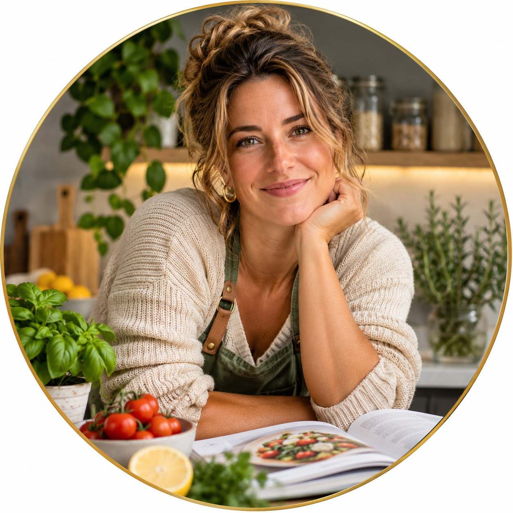
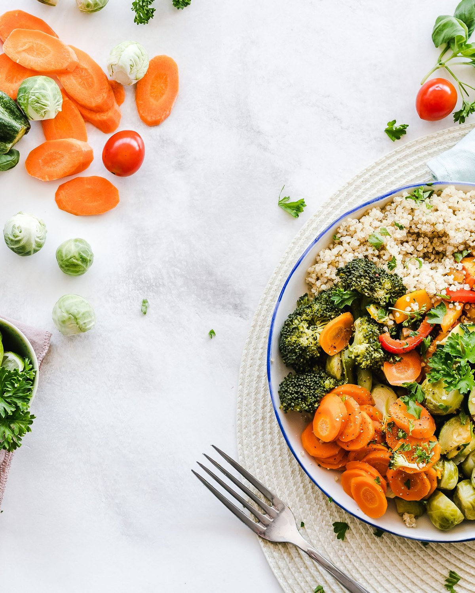

Band 1
Stoffwechsel-Power für Frauen ab 40
Schnelle Alltagsrezepte, ein 28-Tage-Plan und fertige Einkaufslisten.

Hier sind die derzeit lieferbaren Titel. Preise und Verfügbarkeit siehst du bei Amazon. Ein weiterer Band folgt nach dem 10. Dezember 2026 und steht deshalb noch nicht auf dieser Seite.
Band 1
Schnelle Alltagsrezepte, ein 28-Tage-Plan und fertige Einkaufslisten.

Band 2
Alltagstaugliche Rezepte, 28-Tage-Plan und fertige Einkaufslisten.

Band 3
Alltagsrezepte, 28-Tage-Plan und Einkaufslisten für die Woche.

Band 4
Eiweißreiche Alltagsrezepte ohne Pulver und ohne Shakes, mit 28-Tage-Plan und Einkaufslisten.

Band 5
Rezepte für große Portionen, 28-Tage-Plan und Einkaufslisten.

Band 6
Rezepte mit 30 g Eiweiß je Hauptmahlzeit, Calciumwert je Rezept, 28-Tage-Plan und Einkaufslisten, ohne Pulver.

Band 7
Das Kochbuch mit 8 Wochenplänen und 100 Gerichten: sonntags vorkochen, jeden Tag anders.
Die Buchlinks führen direkt zu Amazon. Preise, Formate und Verfügbarkeit findest du auf der jeweiligen Produktseite.
Auf der Amazon-Serienseite siehst du alle zugeordneten Bände im Überblick.
Die Bücher richten sich an Menschen, die zu Hause kochen und sich einen klaren Ablauf wünschen: was auf den Tisch kommt, wie die Woche aufgeteilt ist, und was in den Einkaufskorb gehört.
Kein Auszug aus den Büchern, sondern ein eigenes Kurzrezept für den Alltag – im Stil der Reihe, zum direkten Kochen.
Dieses Rezept wurde ausschließlich für diese Website geschrieben. Es stammt nicht aus den Büchern der Reihe.

Die praktischen Ergänzungen zur Buchreihe – übersichtlich an einem Ort.
Du kommst von TikTok, Instagram oder Pinterest? Hier findest du zu jedem Reel den ganzen Plan.
Zu den Reels-Rezepten ↗Vier Bausteine am Sonntag vorbereiten, in der Woche kombinieren.
Zum Sonntags-Plan ↗Die derzeit lieferbaren Bände direkt über Amazon entdecken.
Zur Buchübersicht ↗Ausschließlich über Amazon. Die Buttons auf dieser Seite führen zur jeweiligen Produktseite. Verkäufer ist Amazon, nicht die Autorin über diese Website. Es gibt hier keinen eigenen Shop und keine Zahlung.
Ja. Der Button führt in der Regel zur eBook-Seite; dort kannst du über den Formatwechsler auch das Taschenbuch öffnen. Beide ASINs stehen in der Titelliste dieser Seite.
Das kann sich ändern. Ob ein Band gerade in Kindle Unlimited enthalten ist, siehst du immer aktuell auf der Amazon-Seite des eBooks. Diese Seite führt keine eigenen Preise oder Aktionen.
Die Leseprobe liegt bei Amazon („Blick ins Buch“ bzw. „Look Inside“). Die Links auf dieser Seite öffnen genau diese Produktseite. Das Rezept weiter oben ist ein eigenes Beispiel der Website und kein Buchauszug.
Den aktuellen Preis zeigt Amazon. Er kann sich unterscheiden, je nach Format, Marktplatz und allfälligen Aktionen. Hier werden keine Preise festgeschrieben.
Hanna Weidinger ist ein Autorenpseudonym. Das gezeigte Porträt ist eine Illustration (KI) und zeigt keine reale Person.
Die Bücher und diese Seite ersetzen keine medizinische oder ernährungstherapeutische Beratung. Bei gesundheitlichen Fragen wende dich an eine Ärztin, einen Arzt oder eine qualifizierte Fachperson.
Texte auf dieser Seite und die Bücher der Reihe sind unter Verwendung digitaler Werkzeuge entstanden.